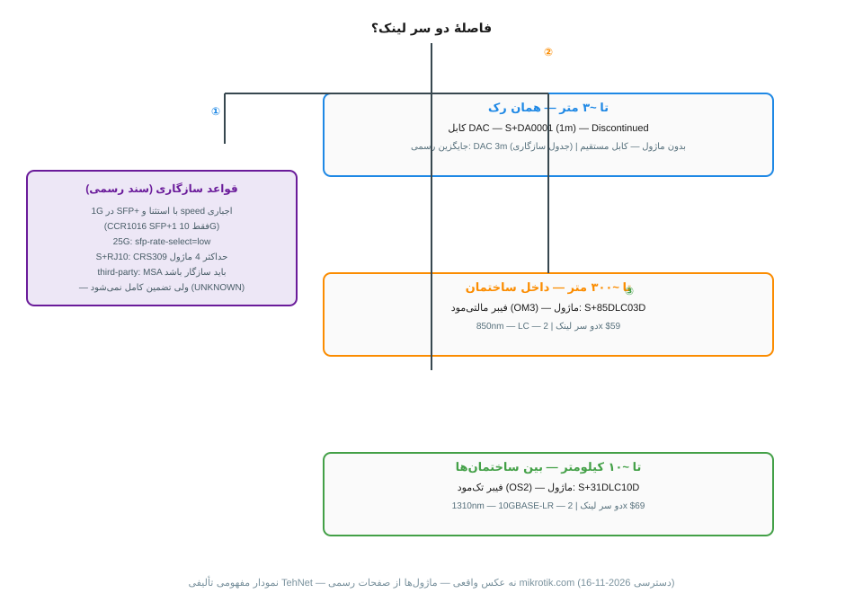

وضعیت درس: DRAFT / NOT_DEPLOYED — در انتظار مرور.
آموزش تصویری از سری switching؛ مخاطب: کارشناس شبکهٔ مبتدی تا متوسط.
سناریوی کاملاً فرضی و آموزشی با دادهٔ ساختگی؛ هیچ شبکهٔ واقعی دستکاری نشده است.
نمودار مفهومی و تألیفی است (نه عکس واقعی)؛ اجرای RouterOS این درس NOT_RUN است (بدون fixture مجاز).
ماژول را با فاصله و محیط انتخاب کنید، نه با قیمت: درون همان رک (تا ~۳ متر) کابل DAC؛ داخل ساختمان (تا ~۳۰۰ متر) فیبر مالتیمود با ماژول 850nm؛ بین ساختمانها/شهر (تا 10km) فیبر تکمود با ماژول 1310nm. سازگاری هم قانون دارد: پورتهای SFP+ معمولاً ماژول 1G را هم میپذیرند اما با استثناهای سندشده و تنظیم اجباری سرعت؛ و ماژولهای MSA-مطابق غیرمیکروتیک «باید سازگار باشند» ولی سازنده تضمین کامل نمیدهد.
| نقش | دستگاه | پورتهای مرتبط |
|---|---|---|
| سوئیچ 10G مرکز رک | CRS309-1G-8S+IN | 8× SFP+ |
| سرور | سرور فرضی با کارت شبکهٔ 10G SFP+ | — |
| NAS | NAS فرضی با پورت SFP+ | — |
| سوئیچ طبقهٔ دیگر | CRS326-24G-2S+RM (فرضی، طبقهٔ بالا) | 2× SFP+ |
| ساختمان دوم | سوئیچ فرضی با SFP+ | — |
| ماژول | نوع | سرعت | فاصله/رسانه | مشخصهٔ کلیدی | قیمت پیشنهادی | وضعیت |
|---|---|---|---|---|---|---|
| S+DA0001 | DAC (کابل مستقیم) | 10G (+FC) | 1m | SFP/SFP+ هر دو سر، MSA-مطابق، «low power» | $29 | Discontinued (صفحهٔ رسمی) |
| S+85DLC03D | نوری | 10G | تا 300m، فیبر مالتیمود، 850nm، LC | — | $59 | فعال |
| S+31DLC10D | نوری | 10G (و 1G) | تا 10km، فیبر تکمود، 1310nm، LC دوبل | 10GBASE-LR (SFF-8431) | $69 | فعال |
مکمل سندشدهٔ خانواده: DAC 3 متری (S+DA0003) در جدول سازگاری رسمی آمده است.
| قاعده | جزئیات سندشده |
|---|---|
| 1G در cage SFP+ | بسیاری از دستگاهها سازگارند اما استثنا دارد: CCR1016-12S-1S+ و CRS212-1G-10S-1S+ پورت SFP+1 فقط روی 10G کار میکند؛ CRS226-24G-2S+/CRS210-8G-2S+ فقط SFP+1 از 1G پشتیبانی میکند و SFP+2 فقط 10G |
| تنظیم اجباری سرعت برای 1G نوری در SFP+ | `/interface ethernet set sfp-sfpplus1 auto-negotiation=no speed=1G-baseX` (v7.12+) |
| ماژولهای 25G در پورتهای پایینتر | نیازمند `sfp-rate-select=low` «برای جلوگیری از خرابی داده» |
| DAC/AOC | DACهای SFP+ 1m/3m و AOC S+AO0005 در جدول سازگاری رسمیاند |
| S+RJ10 (مسی) | فقط در cage SFP+؛ فقط auto-negotiation؛ سقف تعداد per-device (مثلاً CRS309 حداکثر 4)؛ هشدار گرمایش در دستگاههای passive |
| پورتهای Combo | فقط 1G و 10G (بدون 2.5G/5G) |
| ماژول غیرمیکروتیک | «MSA-مطابق باید سازگار باشد» اما «تضمین کامل با همهٔ سازندگان نمیشود» — UNKNOWN برای هر ماژول خاص خارج از فهرست رسمی |

شرح متنی نمودار (جایگزین تصویر برای دسترسپذیری): فلوچارت تصمیم از بالا: «فاصلهٔ دو سر لینک؟» سه شاخه: «تا ~۳ متر، همان رک» → کابل DAC (S+DA0001/0003، بدون ماژول)؛ «تا ~۳۰۰ متر، داخل ساختمان» → فیبر مالتیمود + ماژول S+85DLC03D (850nm)؛ «تا 10km، بین ساختمانها» → فیبر تکمود + ماژول S+31DLC10D (1310nm، 10GBASE-LR). حاشیه: یادآوری قواعد سازگاری (1G در SFP+ با speed اجباری و استثناهای سندشده) و برچسب «تألیفی/مفهومی».
| سناریو | فاصله/محیط | انتخاب سندشده | محاسبهٔ هزینهٔ ماژول (دو سر) |
|---|---|---|---|
| سرور و NAS در همان رک CRS309 | ~1-2m | DAC (S+DA0001 — توجه: Discontinued؛ جایگزین رسمی: DAC 3m از جدول سازگاری) | کابل واحد؛ دو ماژول لازم ندارد → $29 |
| اتصال به CRS326 طبقهٔ بالا | ~80m داکت داخل ساختمان | فیبر مالتیمود + 2× S+85DLC03D (850nm) | 2× $59 = $118 |
| اتصال به ساختمان دوم | ~2km بیرون | فیبر تکمود + 2× S+31DLC10D (1310nm، 10GBASE-LR) | 2× $69 = $138 |
نکتهٔ اجرا: ماژول نوری دوتایی است — دو سر لینک باید همنوع باشند (هر دو 850nm مالتیمود یا هر دو 1310nm تکمود با فیبر همان نوع)؛ قاطیکردن نوع فیبر با نوع ماژول، لینک نمیزند.
| نشانه | علت محتمل | بررسی | راهحل |
|---|---|---|---|
| لینک 1G روی پورت SFP+ بالا نمیآید | سرعت اجباری تنظیم نشده یا دستگاه جزو استثناهاست | `/interface ethernet print` + سند سازگاری همان مدل | `auto-negotiation=no speed=1G-baseX`؛ در استثناها از پورت دیگر استفاده کنید |
| فیبر نو ولی لینک ندارد | نوع فیبر با ماژول نمیخواند (MM با ماژول SM) | برچسب فیبر (OM3/OS2) و مشخصهٔ ماژول | همنوعسازی فیبر و ماژول |
| DAC 3متری لینک نمیزند | خارج از طول سندشده یا جنس نامرغوب | طول/کد رسمی | فقط طولهای سندشدهٔ جدول سازگاری |
| ماژول third-party لینک ناپایدار | تضمین رسمی نمیشود | تست با ماژول رسمی بهعنوان مرجع | ماژول رسمی یا مدل تستشده؛ UNKNOWN را UNKNOWN نگه دارید |
| CRS309 با چند S+RJ10 ناپایدار/داغ | سقف ۴ ماژول و هشدار passive cooling | تعداد/دما | سقف سندشده؛ خنککاری یا ماژول نوری |
| پیوند | مقصد |
|---|---|
| درس قبلی (مبانی سوئیچ) | مقایسهٔ سوئیچهای CRS میکروتیک (S1) |
| درس قبلی (توان) | بودجهٔ PoE (S2) |
| نقشهٔ کامل سری | topic map |
| طراحی/اجرای فیبر و 10G برای سازمان شما | خدمات راهاندازی شبکهٔ تهران |
| درس بعدی سری | N1 — عیبیابی شبکه (تولید در نوبت بعدی؛ فعلاً فقط در topic map) |